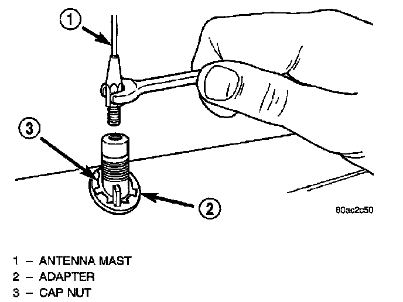
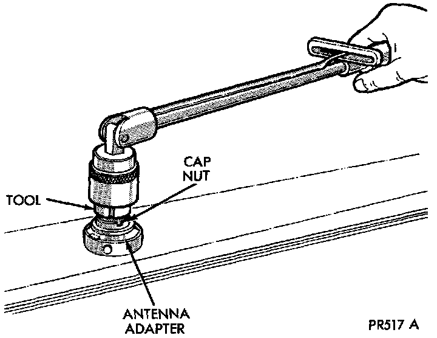
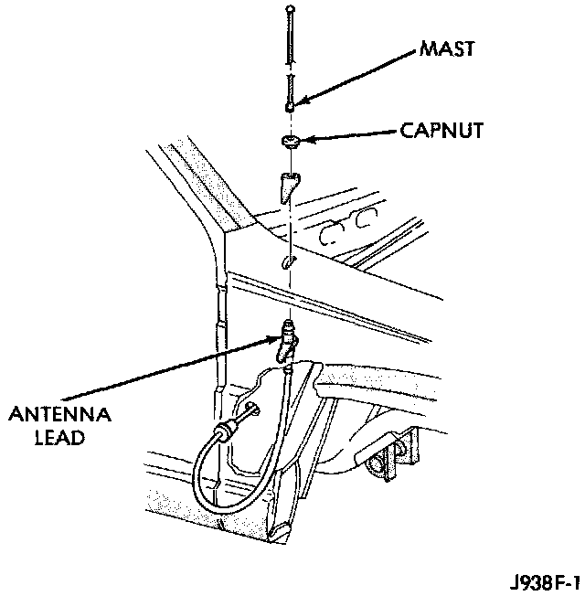
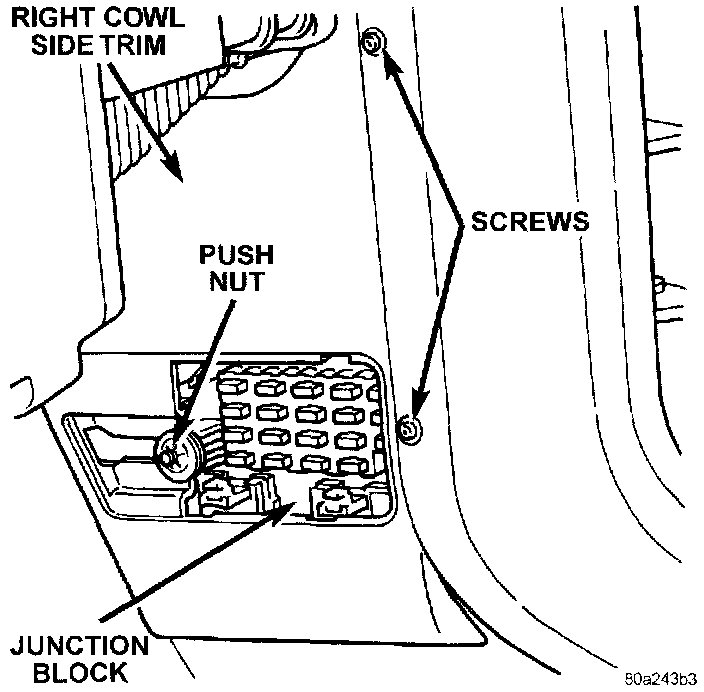
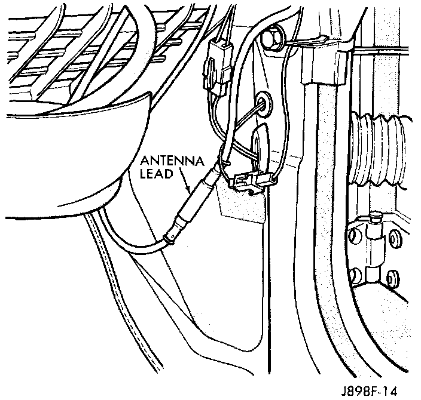

Fixed Mast Antenna
WARNING: ON VEHICLES EQUIPPED WITH AIRBAGS, REFER TO AIR BAGS AND SEAT BELTS/AIR BAGS BEFORE ATTEMPTING STEERING WHEEL, STEERING COLUMN, OR INSTRUMENT PANEL COMPONENT DIAGNOSIS OR SERVICE. FAILURE TO TAKE THE PROPER PRECAUTIONS COULD RESULT IN ACCIDENTAL AIRBAG DEPLOYMENT AND POSSIBLE PERSONAL INJURY.1. Disconnect and isolate the battery negative cable.
2. Remove the right front inner fender liner.
Antenna Mast Remove/Install - Typical:

3. Unscrew the antenna mast from the antenna body.
Antenna Cap Nut Remove/Install - Typical:

4. Remove the antenna cap nut using an antenna nut wrench (Special Tool C-4816).
Fixed Antenna Body And Cable Remove/Install:

5. Lower the antenna assembly through the fender far enough to gain access to the antenna body.
Right Cowl Side Trim Panel Remove/Install:

6. Remove the fuse access panel in the right cowl side trim panel, and remove the push-nut that secures the trim panel to the junction block.
7. Remove the two screws that secure the right cowl side trim panel to the front door opening trim and remove the cowl side kick panel trim.
Antenna Coaxial Cable Connector - Typical:

8. Locate the antenna coaxial cable connector near the junction block at the right cowl side panel. Unplug the connector by pulling it apart while twisting the metal connector halves. Do not pull on the cable.
9. Remove the antenna body and cable by pulling the cable and grommet out of the cowl side panel from inside the right front fender wheel housing.
10. Reverse the removal procedures to install. Tighten the antenna cap nut to 7.9 N.m (70 in. lbs.).